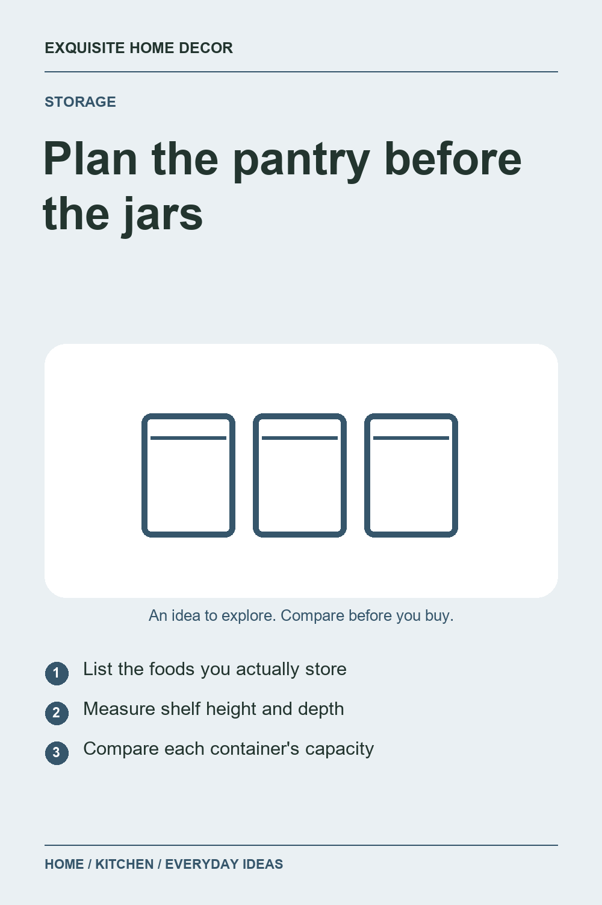

Storage · Shopping ideas
A pantry container planning idea before you buy

Match the container to the shelf and the food
Pantry planning starts with a list of foods you actually keep. Work out the shelf height and depth before buying several matching containers. A consistent look can be appealing, but the practical question is whether each size suits the contents and the space.
A product to consider
OXO Good Grips POP Container, 4.4 quarts
Before buying pantry containers, list what you store and measure your shelves. The OXO Good Grips POP 4.4-quart container is one size to compare. Check its dimensions, care instructions and capacity for your intended dry food.
View this product on Amazon ↗Affiliate link · Check the selected size, color, seller and current availability on Amazon before purchasing. This page does not list a price or guarantee stock.
Three things to plan
- List the foods you actually store
- Measure shelf height and depth
- Compare each container's capacity
Before you buy
The shopping link is for a specific 4.4-quart OXO POP container, not an unspecified set. Confirm the current dimensions, lid details, intended uses and cleaning instructions. Do not assume an entire collection shares the same capacity or care requirements.
About this feature
This is an editorial shopping idea based on the product listing checked October 27, 2026. It is not a hands-on review, an endorsement by the manufacturer, or a promise of results. Product specifications and available variations can change; use the current listing and manufacturer instructions when making your choice.